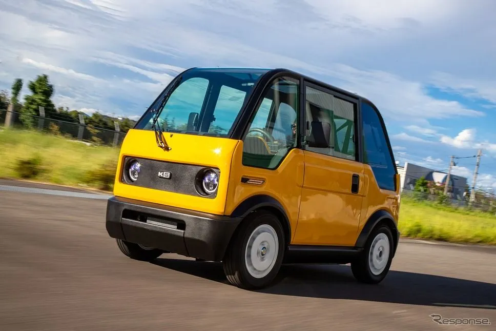

What Japan's $7,000 Mibot gets right
Originally posted on LinkedIn, June 23, 2025.
The Mibot is a $7,000 electric vehicle that has taken off in Japan. While Tesla aims higher, Japan's KG Motors went in the opposite direction and got it right.
This single-seat EV looks like a cross between a Segway and a toy car. As of June 23, 2025, it had 2,250 orders.
- Top speed: 60 km/h
- Range: 100 km
- Charging time: 5 hours
That is exactly what a dense Japanese city requires. The company's goal is clear: basic, accessible transportation for people who do not need anything more.
It is working. The Mibot has more orders than Toyota had for EVs in Japan over the past year.
In Israel, the answer may not be another SUV on the road. It may simply be less.
